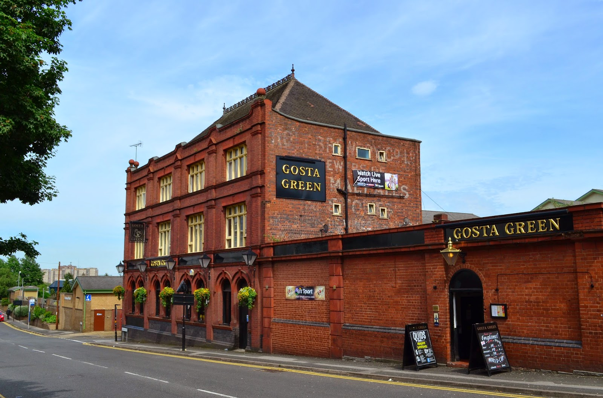
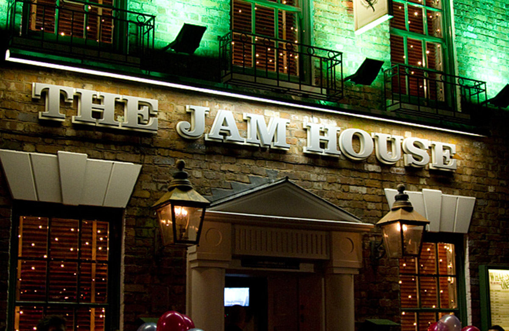
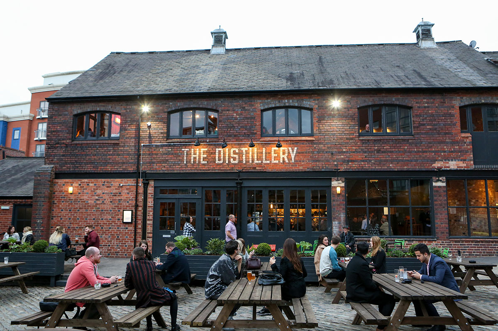

Bars & Pubs
On this page you can find a list of Birmingham's best bars and pubs to explore.


Gosta Green
Cosy campus bar at the side of Aston University. Head to Gosta for a lively and relaxed atmosphere, menu of pub classics with a twist or to watch some sports.

The Jam House
If you enjoy live music in an atmospheric setting, head to The Jam House in the heart of Jewellery Quarter.

The Distillery
The Distillery provides a lovely setting with an outdoor sitting area, by the canals just around the corner from the Bridley Place.